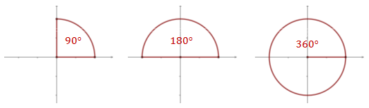
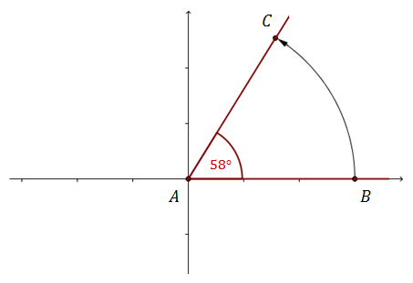
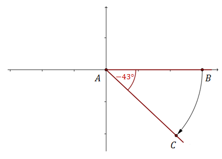
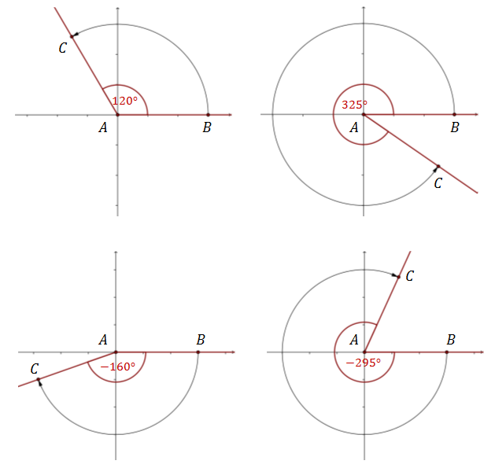
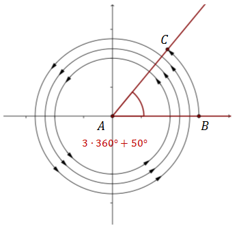

Kąt jednostkowy - to kąt któremu przyporządkowujemy liczbę \(1\).
Jeżeli kąty mierzymy w stopniach, to kątem jednostkowym jest kąt o mierze
\(1^\circ \).
Miara kąta - to liczba określająca ile razy kąt jednostkowy mieści się
w danym kącie.
Niektóre kąty mają specjalne nazwy, np.:
- kąt zerowy - to kąt o mierze \(0^\circ\),
- kąt prosty - to kąt o mierze \(90^\circ\),
- kąt półpełny - to kąt o mierze \(180^\circ\),
- kąt pełny - to kąt o mierze \(360^\circ\),
- kąt ostry - to kąt o mierze mniejszej niż \(90^\circ\),
- kąt rozwarty - to kąt o mierze większej niż \(90^\circ\),
- kąt wypukły - to kąt o mierze mniejszej lub równej \(180^\circ\),
- kąt wklęsły - to kąt o mierze większej niż \(180^\circ\) i mniejszej niż \(360^\circ \).

W praktyce najczęściej spotykamy się z kątami z przedziału \(\left \langle 0^\circ
; 360^\circ \right \rangle\). Można jednak ten zakres rozszerzyć i rozważać kąty o miarach np.:
\(400^\circ , 680^\circ \text{ lub } -510^\circ \). Za chwilę zobaczymy jak należy interpretować
takie "większe" kąty.
Zacznijmy od tego, że zaznaczymy dowolny kąt w układzie współrzędnych.  Zauważmy, że powyższy kąt o mierze
\(58^\circ \) uzyskaliśmy poprzez obrót półprostej \(AB\) wokół punktu \(A\) (drogę jaką pokonał
punkt \(B\) pokazuje czarna strzałka).
Półprostą \(AB\) obróciliśmy w kierunku przeciwnym do
ruchu wskazówek zegara i dzięki temu otrzymaliśmy kąt dodatni.
Jeżeli obracamy półprostą w
kierunku zgodnym z ruchem wskazówek zegara, to otrzymujemy kąty ujemne. Przykładowo: 
Więcej przykładów: 
Półprostą \(AB\) możemy obrócić dowolnie wiele razy i jeszcze o pewien kąt mniejszy
od kąta pełnego. Jeżeli na przykład obrócimy ją całkowicie trzy razy i jeszcze o kąt \(50^\circ \),
to otrzymamy kąt o mierze \(3\cdot 360^\circ +50^\circ = 1130^\circ \). 
Jak widać na powyższym rysunku kąt o mierze \(1130^\circ \) jest wyznaczony przez
te same ramiona \(AB\text{ i }AC\) co kąt o mierze \(50^\circ \).
Jeżeli
ramiona kąta \(\alpha \) pokrywają się z ramionami kąta \(\beta \), to wówczas kąty te możemy ze
sobą utożsamiać.
Oto kilka przykładów:
- Ramiona kąta \(\alpha = 40^\circ \) są ramionami kąta \(\beta =400^\circ \), bo \(400^\circ
=360^\circ +40^\circ \).
- Ramiona kąta \(\alpha = 40^\circ \) są ramionami kąta \(\beta =760^\circ \), bo \(760^\circ
=2\cdot 360^\circ +40^\circ \).
- Ramiona kąta \(\alpha = 40^\circ \) są ramionami kąta \(\beta =1120^\circ \), bo
\(1120^\circ =3\cdot 360^\circ +40^\circ \).
- Ramiona kąta \(\alpha = 40^\circ \) są ramionami kąta \(\beta =1480^\circ \), bo
\(1480^\circ =4\cdot 360^\circ +40^\circ \).
- Ramiona kąta \(\alpha = 40^\circ \) są ramionami kąta \(\beta =-320^\circ \), bo
\(-320^\circ =(-1)\cdot 360^\circ +40^\circ \).
- Ramiona kąta \(\alpha = 40^\circ \) są ramionami kąta \(\beta =-680^\circ \), bo
\(-680^\circ =(-2)\cdot 360^\circ +40^\circ \).
Każdy kąt można utożsamić z kątem z przedziału \(\left \langle 0^\circ
;360^\circ \right \rangle\).
Oto kilka przykładów:
- \(450^\circ =90^\circ +360^\circ \)
- \(600^\circ =240^\circ +360^\circ \)
- \(2000^\circ =200^\circ +5\cdot 360^\circ \)
- \(5471^\circ =71^\circ +15\cdot 360^\circ \)
- \(-1425^\circ =15^\circ -4\cdot 360^\circ \)
- \(-2000^\circ =160^\circ -6\cdot 360^\circ \)